Une équipe à l’image de nos valeurs
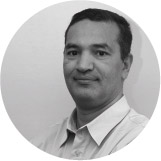
Abdel BELMOKADEM,
directeur de Nes et Cité
Avec plus de dix ans d'expérience sur le terrain, à Vaulx-en-Velin et dans de nombreux quartiers en déficits de dynamique collective, Abdel Belmokadem a développé et mis en application des techniques de médiation et de gestion innovantes. Ces dispositifs ont fait leurs preuves dans des zones particulièrement sensibles. Mais le champ de la médiation doit aussi dépasser la vie des « quartiers » pour agir sur le fonctionnement et les pratiques des acteurs publics et économiques. La méconnaissance et la peur de l'autre, le désœuvrement social des usagers et/ou clients, sont des facteurs permanents de rupture de dialogue entre ces acteurs.
Médiation
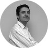
Grégory FONTAINE
Responsable exécutif Pôle Médiation
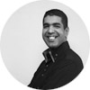
Ramzi BELMOKADEM
Responsable opérationnel Pôle Médiation
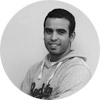
Saber SAADALLAH
Chargé de médiation
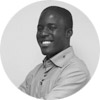
Diakariao SAKHO
Chargé de médiation
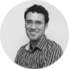
Mohamed TARCHOUNI
Chargé de médiation
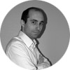
Benjamin BRUYAS
Chargé de médiation
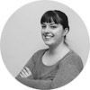
Marion JACQUET
Chargée de projet médiation
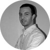
Maroine KABIL
Chargé de médiation
Administratif / Ressources Humaines
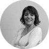
Djamila BENYOUB
Assistante administrative et commerciale
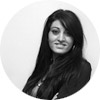
Nesrine TAIBI
Assistante administrative
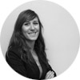
Elise RIVOIRE
Chargée de missions RH
Formation
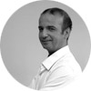
Ouahid MOBEL
Formateur
Said YAHIAOUI
Consultant Formateur, expert politique de la Ville et des politiques partenariales, Docteur en Économie
Communication / Diversité
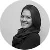
Florence PHAM
Chargée de communication / Chargée de projet « Jobs&Cité »
Nes&Cité s’entoure également d’un réseau actif de 30 consultants spécialisés (formation, conseil,…) et d’une équipe de 35 bénévoles présents lors de nos opérations évènementielles.